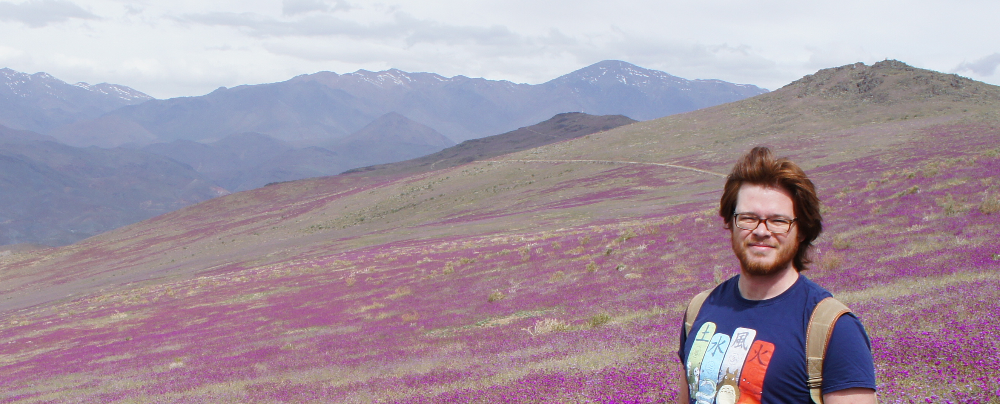
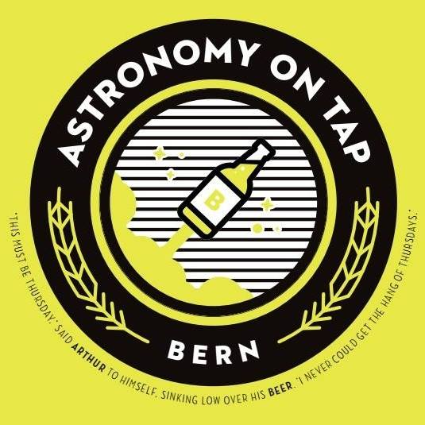
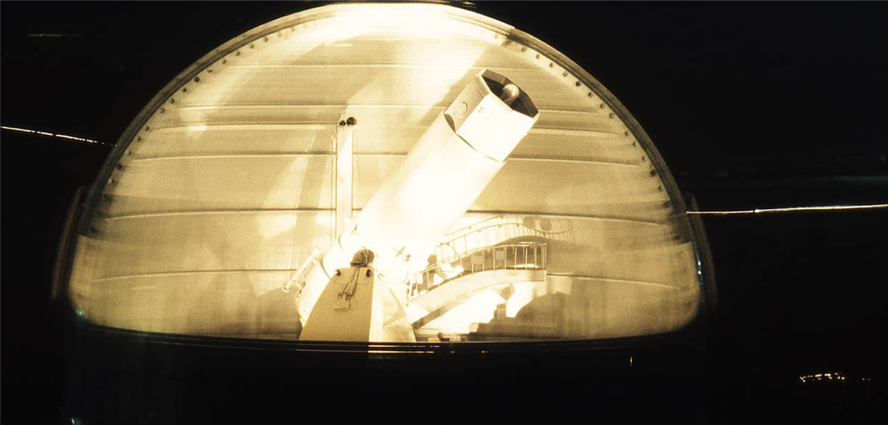
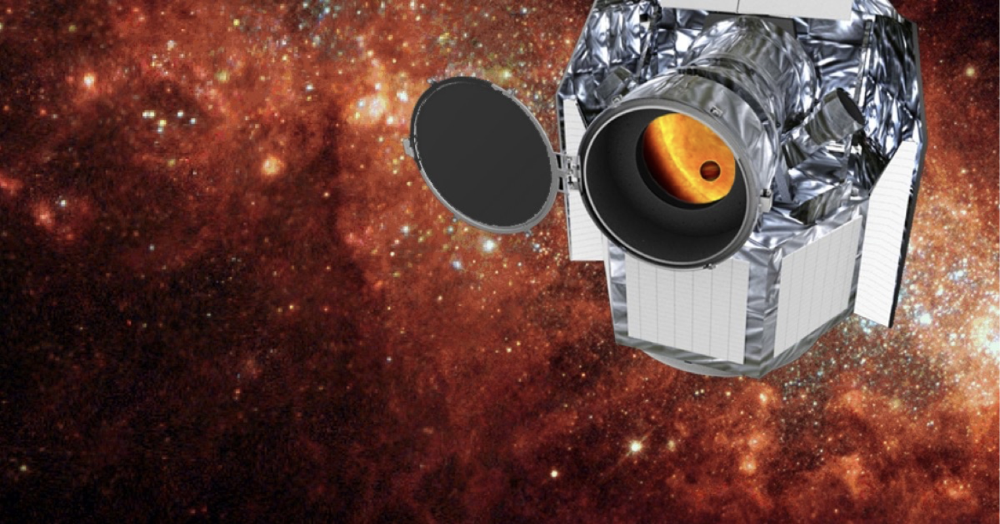

About
The blooming Atacama desert, near La Silla Observatory, Chile
French citizen, born in 1989 in Paris.
Fluent in English and French. Intermediate level in Spanish.
For a longer version of my CV, check the Downloads page
ORCID ID :  orcid.org/0000-0001-9826-3463
orcid.org/0000-0001-9826-3463
Alternatively, you can scan the ORCID QR code just below. Because, why not ?
Position
Since Apr 2017
Postdoctoral researcher in the SAINT-EX team at the Center for Space and Habitability, University of Bern
Current Research Involvements
Since May 2017
NCCR PlanetS Associate
Since Apr 2017
In charge of the PRINCE pipeline development for the SAINT-EX telescope
(PI : Brice-Olivier Demory)
Since Oct 2013
Member of the Extrasolar Planet Research consortium on the SOPHIE spectrograph
Education
Oct 2013 — Oct 2016
Ph.D. with highest honours at the Laboratoire d’Astrophysique de Marseille
« Detection and properties of Exo-Neptunes and Super-Earths : Synergies between CHEOPS and SOPHIE »
under the supervision of Magali Deleuil and François Bouchy
Outreach
Currently setting up the « Astronomy on Tap Bern » première !
Check our Facebook page and do not hesitate to come to discuss with me and some cool people with a good chilled beer !

Teaching Assistant experience
| From |
To |
Class |
Hours |
| Jan 2014 |
May 2016 |
Practical works for 1st year B.Sc. physics students at Aix-Marseille University |
45 |
| Jan 2014 |
May 2016 |
Practical works in physics for 1st year B.Sc. biology students at Aix-Marseille University |
130 |
| Jan 2014 |
May 2014 |
Thermodynamics for 3rd year B.Sc. physics students at Aix-Marseille University |
20 |
Research
My research focuses on the detection and the statistical properties of small exoplanets —Neptune-size and below—, in transit (SAINT-EX, CHEOPS) and in radial velocity (SOPHIE).
The SAINT-EX telescope and PRINCE
SAINT-EX is a robotic telescope currently being built at the San Pedro Mártir Observatory in Mexico.
This telescope will focus on the detection of small planets in transit around ultracool dwarves, such as the famous TRAPPIST-1 system.
I am developing the pipeline for this telescope using state-of-the-art data analysis techniques (such as PCA decomposition, GPs and bayesian statistics).
This awesome tool will automatically reduce and analyse data then compile nightly reports to detect new worlds while drinking the morning coffee.
Its name ? PRINCE —Photometric Reduction and In-depth Nightly Curve Exploration—.
Precise reduction, robust analysis and end-to-end automation.
PRINCE really will be charming.
The SOPHIE spectrograph
Long exposure photography of the T193@OHP.
Credits : Gilbert Rau & OHP
SOPHIE is an echelle spectrograph installed on the 1.93m telescope at the Observatoire de Haute Provence, in France.
The first part of my work on this instrument was to improve the data reduction process in order to reach a stability enabling the detection of low-mass planets.
I first analyzed, interpreted and corrected the instrumental systematics of SOPHIE which lead to an improvement in precision down to the 2 m/s level.
I also explored the potential of Gaussian Processes to correct SOPHIE’s systematics (Courcol & Santerne, in prep).
Thanks to this work, I uncovered the planetary nature of HD 164595 b (Courcol et al 2015), a Neptune-like planet on a circular 40 days orbit around a solar twin.
It is the smallest planetary signal ever discovered with SOPHIE. Additional candidates are also emerging and will be confirmed in the near future. I also computed the detection limits with a new, reliable and very fast technique I developed, and established an assessment of the high precision program on SOPHIE after 5 years of observations and more than 3000 measurements. This lead me to devise new observational strategies to maximize the number of detection before the launch of CHEOPS in 2018.
The CHEOPS satellite
The CHEOPS satellite will be dedicated to the search of transits of small planets already detected in radial velocities around bright stars.
In order to prepare its observing program, I built a list of targets from radial velocity surveys.
CHEOPS, with its high precision photometry, will then be able to to measure very accurately their radius and constrain their density.
In order to maximized the scientific impact, I also proposed several indices to prioritize targets. This program could lead to the identification of 3 to 9 new low mass transiting planets.
Finally, I lead an preliminary observations program on several targets with SOPHIE to better constrain their ephemeris (Courcol et al. in prep).
This work is essential to optimize the time CHEOPS will spend on each star.
With these observations, the uncertainties on the transit epoch are reduced to less than 24h and the precision on the measured masses is improved by 50% in average.
The CHEOPS satellite.
Credits : ESA
Statistical properties of small exoplanets
I also studied the statistical properties of the low-mass planet population (Courcol et al. 2016).
Based on the hundred of planets that are well characterized in this mass regime, I uncovered a link between the maximal mass of these planets and the metallicity of their host-stars.
This previously unknown phenomenon favors in-situ formation or a metallicity-driven migration mechanism.
This also show that, like giant planets, the occurence rate of Neptunes is correlated with the host-star metallicity.
Publications
My ADSBeta search results page
First author publications
- Courcol, B., Bouchy, F., Deleuil, M., 2016, MNRAS, 461, 1841 : “An upper boundary in the mass-metallicity plane of exo-Neptunes”
- Courcol, B., Bouchy, F., Pepe, F., et al., 2015, A&A, 581, A38 : “The SOPHIE search for northern extrasolar planets VII. A warm Neptune orbiting HD 164595”
Other publications
- Rey, J., Hébrard, G., Bouchy, F., et al., 2017, A&A, 601A, 9R : "The SOPHIE search for northern extrasolar planets. XII. Three giant planets suitable for astrometric mass determination with Gaia"
- Crouzet, N., McCullough, P. R., Long, D., et al., 2017, ApJ, 153, 94C : "Discovery of XO-6b: A Hot Jupiter Transiting a Fast Rotating F5 Star on an Oblique Orbit"
- Santerne, A., Hébrard, G., Lillo-Box, J., et al., 2016, Apj, 824, 55 : “K2-29 b/WASP-152 b: An Aligned and Inflated Hot Jupiter in a Young Visual Binary”
- Diaz, R.F., Rey, J., Demangeon, O., et al., 2016, A&A, 591, A146 : “The SOPHIE search for northern extrasolar planets. XI. Three new companions and an orbit update: Giant planets in the habitable zone”
- Hébrard, G., Arnold, L., Forveille, T., et al., 2016, A&A, 588, A145 : “The SOPHIE search for northern extrasolar planets. X. Detection and characterization of giant planets by the dozen”
- Wilson, P.A., Hébrard, G., Santos, N.C., et al., 2016, A&A, 588, A144 : “The SOPHIE search for northern extrasolar planets. IX. Populating the brown dwarf desert”
- Santerne, A., Moutou, C., Tsantaki, M., et al. 2016, A&A, 587, A64 : “SOPHIE velocimetry of Kepler transit candidates XVII. The physical properties of giant exoplanets within 400 days of period”
- Lillo-Box, J., Demangeon, O., Santerne, A., et al., 2016, A&A, 594, A50 : “K2- 30b and K2-34b: two inflated hot-Jupiters around Solar-type stars”
- Bouchy, F., Ségransan, D., Diaz, R.F., et al., 2016, A&A, 585, A46 : “The SOPHIE search for northern extrasolar planets. VIII. Follow-up of ELODIE candidates: long-period brown-dwarf companions”
- Spake, J.J., Brown, D.J.A., Doyle, A.P., et al. 2015, PASP, 128, 960 : “WASP- 135b: a highly irradiated, inflated hot Jupiter orbiting a G5V star”
- Armstrong, D., Santerne, A., Veras, D., 2015, A&A, 582, A33 : “ One of the closest exoplanet pairs to the 3:2 mean motion resonance: K2-19b and c”
- Bourrier, V., Lecavelier des Etangs, A., Hébrard, G., et al., 2015, A&A, 579, A55 : “SOPHIE velocimetry of Kepler transit candidates. XVI. Tomographic measurement of the low obliquity of KOI-12b, a warm Jupiter transiting a fast rotator”
- Barros, S. C. C., Almenara, J.M., Demangeon, O., et al., 2015, MNRAS, 454, 4267 : “Photodynamical mass determination of the multiplanetary system K2-19”
Contact
Address
Gesellschaftsstrasse 6, Office 203
3012 Bern, Switzerland
Mail
bastien.courcol@csh.unibe.ch
Skype
bcourcol
Downloads and links
Career
ORCID
Long CV (English)
CV long (Français)
Works
ADSBeta search
PhD Thesis (French only)